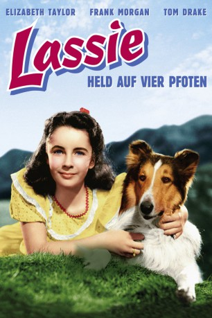
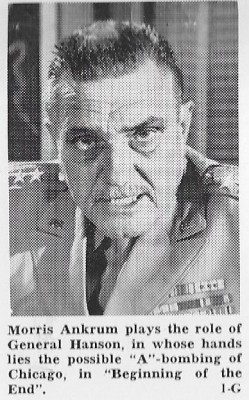
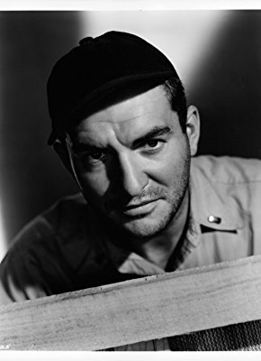
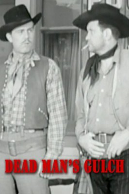
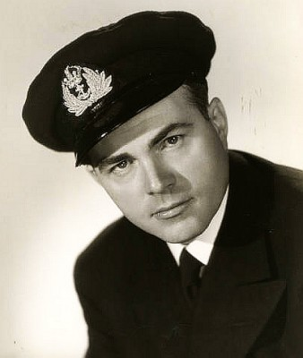
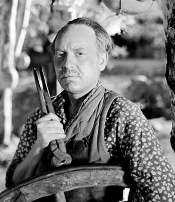
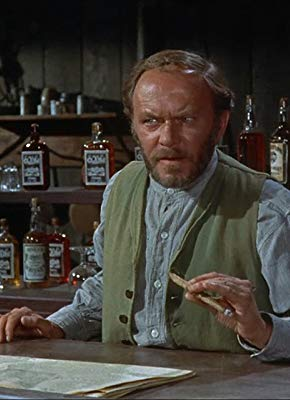
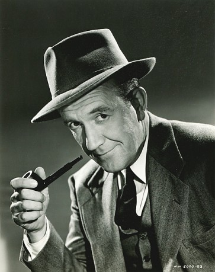

#11054 Lassie - Held auf vier Pfoten
Alternativ: Courage of Lassie (Englischer Titel)
 
 IMDB-Wertung: 6.4 / 10
IMDB-Wertung: 6.4 / 10  Metascore: 0
Metascore: 0 
Als Lassie angeschossen wird, pflegt die kleine Kathie ihn gesund. Doch ihre Mutter will von dem Hund nichts wissen, und so landet Lassie zunächst in der Armee...
Jahr: 1946
Dauer: 88 Minuten
FSK: 6
Land: USA Studio: MGMTonspuren: DD2.0 - ,
Untertitel:
Auflösung: 720p (1392x1080) Größe: 7208 MB
Genre: Drama, Abenteuer, Krieg, Familie
Regisseur: Fred M. Wilcox
Drehbuch: Lionel Houser
Soundtrack: Scott Bradley, Bronislau Kaper, Mario Castelnuovo-Tedesco
Darsteller:
- Elizabeth Taylor als Kathie Merrick
- Frank Morgan als Harry MacBain
- Tom Drake als Sergeant Smitty
- Selena Royle als Mrs. Merrick
- Harry Davenport als Judge Payson
- George Cleveland als Old Man
- Catherine McLeod als Alice Merrick
-  Morris Ankrum als Farmer Crews
- Mitchell Lewis als Gil Elson
- David Holt als Pete Merrick
- Minor Watson als Sheriff Ed Grayson
-  Donald Curtis als Charlie
-  Clancy Cooper als Casey
- Carl 'Alfalfa' Switzer als First Youth
- King Baggot als Courtroom Spectator (uncredited)
- Douglas Cowan als Sgt. Lewis (uncredited)
-  James Flavin als Lt. Tom Arnold (uncredited)
-  Byron Foulger als Dr. Coleman (uncredited)
- Paul Langton als Minor Role (uncredited)
- Robert Emmett O'Connor als Deputy (uncredited)
-  William 'Bill' Phillips als Sgt. Tyler (uncredited)
-  Addison Richards als Captain in Aleutians (uncredited)
- Arthur Space als Officer (uncredited)
- Jane Green als Mrs. Elson
- Bill Wallace als Sergeant Mac
- Conrad Binyon als Second Youth
- Pal als Bill aka Duke
- Laddie als Dog (uncredited)
- Bill Lewin als Sergeant (uncredited)
- Lyle Mulhall als Corporal (uncredited)
- Garry Owen als Cook Swenson - Sailor helping Smitty (uncredited)
- Charles Sullivan als Officer Instructor (uncredited)
- Arthur Walsh als Freddie Crews (uncredited)
Datei: X:\2-Dilogie(G-M)\Lassie - Held auf vier Pfoten (1946, FSK6, 1392x1080).mkv seit 24.04.2019
Festplatte: HD Collection-2(A-Z)-3(A-M)
 Alle Filme aus Gruppe '2-Dilogie(G-M)'
Alle Filme aus Gruppe '2-Dilogie(G-M)'